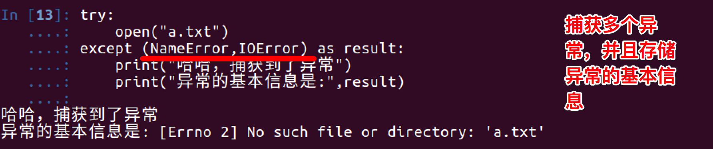
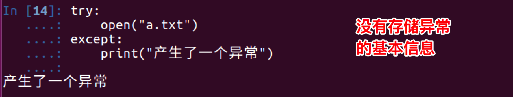
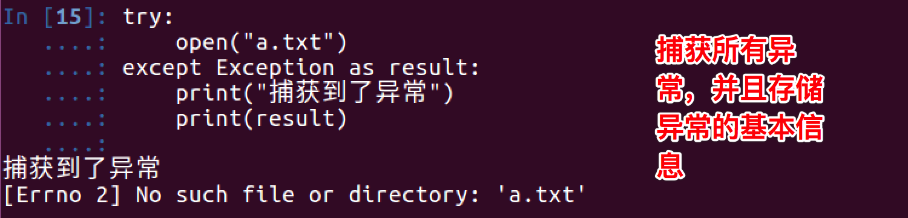
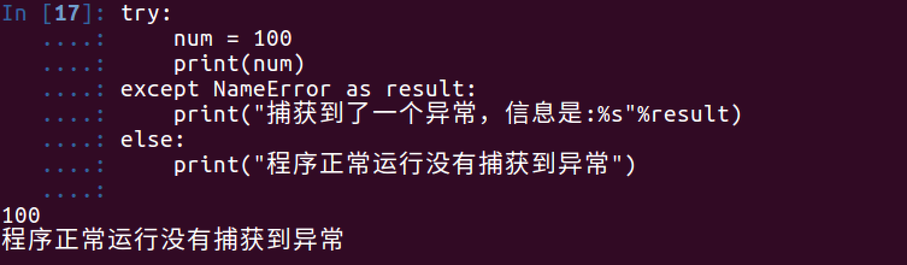

18.2.捕获异常
<1>捕获异常 try...except...
看如下示例:
try:
print('-----test--1---')
open('123.txt','r')
print('-----test--2---')
except IOError:
pass
运行结果:
-----test--1---
说明:
- 此程序看不到任何错误，因为用except 捕获到了IOError异常，并添加了处理的方法
- pass 表示实现了相应的实现，但什么也不做；如果把pass改为print语句，那么就会输出其他信息
小总结:

- 把可能出现问题的代码，放在try中
- 把处理异常的代码，放在except中
<2> except捕获多个异常
看如下示例:
try:
print num
except IOError:
print('产生错误了')
运行结果如下:
Traceback (most recent call last):
File "/Users/mac/PycharmProjects/Month1/0000.py", line 107, in <module>
print(num)
NameError: name 'num' is not defined
想一想:
上例程序，已经使用except来捕获异常了，为什么还会看到错误的信息提示？
答:
except捕获的错误类型是IOError，而此时程序产生的异常为 NameError ，所以except没有生效
修改后的代码为:
try:
print num
except NameError:
print('产生错误了')
运行结果如下:
产生错误了
实际开发中，捕获多个异常的方式，如下：
#coding=utf-8
try:
print('-----test--1---')
open('123.txt','r') # 如果123.txt文件不存在，那么会产生 IOError 异常
print('-----test--2---')
print(num)# 如果num变量没有定义，那么会产生 NameError 异常
except (IOError,NameError):
#如果想通过一次except捕获到多个异常可以用一个元组的方式
注意：
- 当捕获多个异常时，可以把要捕获的异常的名字，放到except 后，并使用元组的方式仅进行存储
<3>获取异常的信息描述


<4>捕获所有异常


<5> else
咱们应该对else并不陌生，在if中，它的作用是当条件不满足时执行的实行；同样在try...except...中也是如此，即如果没有捕获到异常，那么就执行else中的事情
try:
num = 100
print num
except NameError as errorMsg:
print('产生错误了:%s'%errorMsg)
else:
print('没有捕获到异常，真高兴')
运行结果如下:

<6> try...finally...
try...finally...语句用来表达这样的情况：
在程序中，如果一个段代码必须要执行，即无论异常是否产生都要执行，那么此时就需要使用finally。 比如文件关闭，释放锁，把数据库连接返还给连接池等
demo:
import time
try:
f = open('test.txt')
try:
while True:
content = f.readline()
if len(content) == 0:
break
time.sleep(2)
print(content)
except:
#如果在读取文件的过程中，产生了异常，那么就会捕获到
#比如 按下了 ctrl+c
pass
finally:
f.close()
print('关闭文件')
except:
print("没有这个文件")
说明:
test.txt文件中每一行数据打印，但是我有意在每打印一行之前用time.sleep方法暂停2秒钟。这样做的原因是让程序运行得慢一些。在程序运行的时候，按Ctrl+c中断（取消）程序。
我们可以观察到KeyboardInterrupt异常被触发，程序退出。但是在程序退出之前，finally从句仍然被执行，把文件关闭。